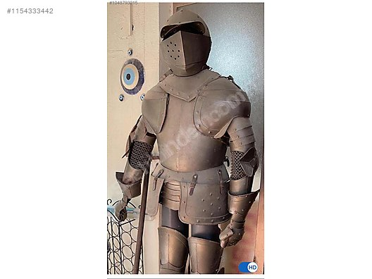
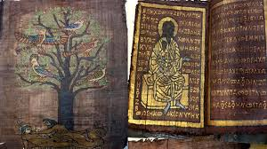
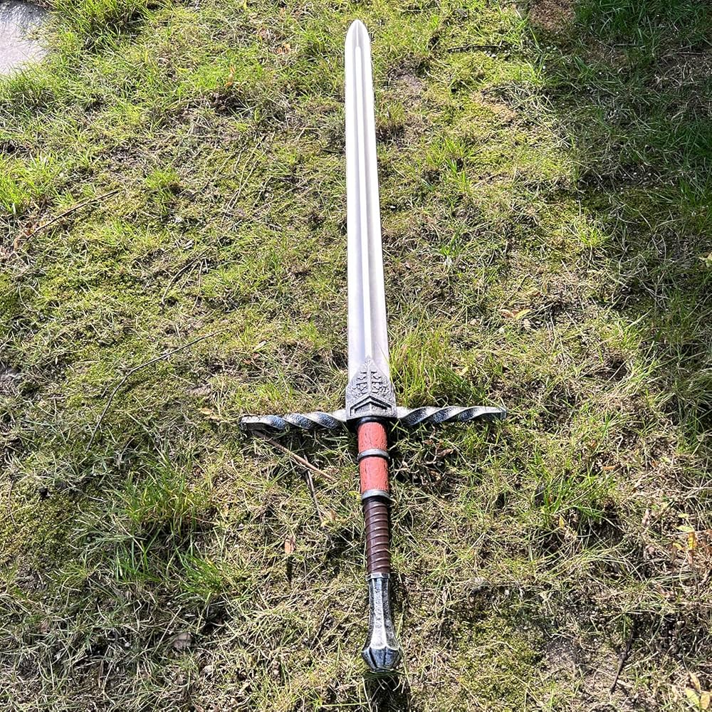

Orta Çağ Hazineleri
1. Şövalye Zırhı
Tam vücut zırhı, 15. yüzyılda Avrupa'da soylu savaşçılar tarafından giyilirdi. Hem koruyucu hem de gösterişli bir tasarıma sahiptir.
2. El Yazması İncil
El işçiliğiyle yazılmış bu kutsal kitap, süslemeleri ve altın varak detaylarıyla Orta Çağ sanatının en değerli örneklerindendir.
3. Haçlı Kılıcı
Haçlı Seferleri döneminden kalan bu kılıç, hem dini hem askeri amaçlarla kullanılmış, tarihî bir semboldür.